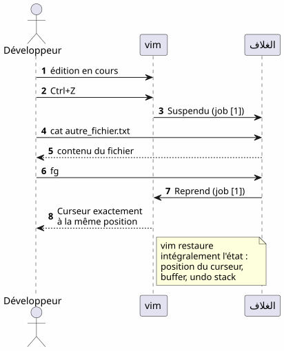
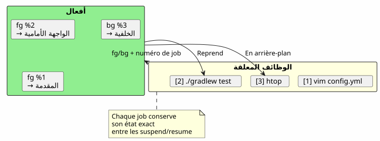
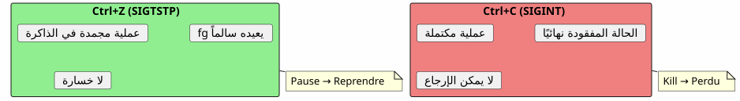
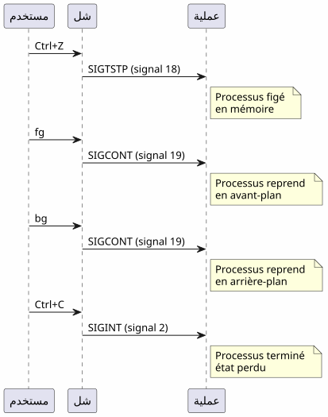

نصائح فائقة لأمر fg: عندما يحفظ Ctrl+Z جلستك في الطرفية
Publié le 18 April 2026
- المشكلة: طرفية مشغولة
- الثلاثة الأوامر الضرورية
- سيناريو 1 : البناء الطويل
- سيناريو 2 : المحرر منسي
- السيناريو 3: عملية opencode معلقة
- السيناريو 4: إدارة وظائف متعددة في وقت واحد
- الاختلافات بين fg, bg, Ctrl+Z, Ctrl+C و &
- الدورة الكاملة لحياة الوظيفة
- نصائح متقدمة
- المصائد والأخطاء الشائعة
- مخطط ملخص
- لماذا fg غير مُقدر؟
- الذاكرة التقنية : الإشارات
- خاتمة
- المراجع
أنت تطلق`./gradlew build`, يتم حظر المحطة لمدة 3 دقائق، وتحتاج إلى القيام بشيء آخر أثناء الانتظار؟ لا حاجة لفتح علامة تبويب جديدة.`Ctrl+Z`يوقف العملية,`fg`يعيده بالضبط إلى المكان الذي تركته فيه. إنه النصيحة Unix الأكثر تقليلاً من التقدير في روتين المطور اليومي.
- طُق
-
[]
المشكلة: طرفية مشغولة
كل مطور قد واجه هذه الحالة :
$ ./gradlew build
> Building...الطرفية متوقفة. لم يعد بإمكانك كتابة أي أمر. وأنت بحاجة إلى استعراض ملف، تشغيل (Note: There is a trailing space after "تشغيل" as in the original fragment.)git status, أو التحقق من منفذ مشغول.
Failed to generate image: PlantUML preprocessing failed: [From <input> (line 6) ] @startuml skinparam backgroundColor #FEFEFE actor Développeur as dev participant "النهاية" as term participant "Gradle ^^^^^ Syntax Error? (Assumed diagram type: sequence) @startuml skinparam backgroundColor #FEFEFE actor Développeur as dev participant "النهاية" as term participant "Gradle ( عملية )" as gradle dev -> term : ./gradlew build term -> gradle : Lance le build gradle -> term : Occupe le terminal\n(pas de prompt) dev -> term : veut taper une commande term --> dev : ❌ Terminal bloqué note right of dev Le développeur est paralysé pendant toute la durée du build end note @enduml
معظم المطورين يفتحون وحدة طرفية جديدة. ولكن هناك حلًا أكثر أناقة، وأسرع، وناتي: إدارة المهام.
الثلاثة الأوامر الضرورية
Ctrl+Z — إيقاف (SIGTSTP)
`Ctrl+Z`يُرسل الإشارة`SIGTSTP`إلى العملية في المقدمة. العملية هيمعلق— غير مقتول — و استعاد terminal موجهه.
$ ./gradlew build
> Building...
^Z
[1]+ Stoppé ./gradlew build
$العدد بين الأقواس`[1]`هورقم الوظيفة. Le `+`يُشير المهمة الافتراضية.
fg — استئناف في المقدمة
`fg`إنه يعيد المهمة المعلقة إلى الواجهة. يستأنف العملية بالضبط من حيث توقفت.
$ fg
./gradlew build
> Building... (reprend où il en était)مع رقم وظيفة محدد :
$ fg %2bg — استئناف في الخلفية
`bg`يستأنف العملية بدون حظرterminal. مثالي للبناءات الطويلة.
$ bg
[1]+ ./gradlew build &
$Le `&`في النهاية يعني أن العملية تعمل في الخلفية.
jobs — قائمة وظائف الغلاف
$ jobs
[1]- Stoppé vim README.md
[2]+ En cours ./gradlew buildFailed to generate image: PlantUML preprocessing failed: [From <input> (line 5) ] @startuml skinparam backgroundColor #FEFEFE skinparam defaultFontName sans-serif state "الواجهة الأمامية ^^^^^ Syntax Error? (Assumed diagram type: sequence) @startuml skinparam backgroundColor #FEFEFE skinparam defaultFontName sans-serif state "الواجهة الأمامية (الطرفية محظورة)" as fg #LightCoral state "معلق\n(Ctrl+Z)" as stopped #LightYellow state "خلفية (bg)" as bg_ #LightGreen [*] --> fg : Lance une commande fg --> stopped : Ctrl+Z\n(SIGTSTP) stopped --> fg : fg\nreprend en avant-plan stopped --> bg_ : bg\nreprend en arrière-plan bg_ --> fg : fg\nramène en avant-plan fg --> [*] : Commande terminée note right of stopped Le processus est figé mais _pas_ tué end note note left of bg_ Le terminal est libre le build continue end note @enduml
سيناريو 1 : البناء الطويل
هذا هو أكثر حالات الاستخدام شيوعًا. أنت تشغل عملية بناء Gradle، والطرفيّة متوقفة، وتحتاج إلى فعل شيء آخر.
Failed to generate image: PlantUML preprocessing failed: [From <input> (line 8) ] @startuml skinparam backgroundColor #FEFEFE autonumber actor Développeur as dev participant "طرفية" as term participant "Gradle" as gradle database "الحالة ^^^^^ Syntax Error? (Assumed diagram type: sequence) @startuml skinparam backgroundColor #FEFEFE autonumber actor Développeur as dev participant "طرفية" as term participant "Gradle" as gradle database "الحالة العملية" as state dev -> term : ./gradlew build term -> gradle : Lance le build gradle -> state : En cours (FG) dev -> term : Ctrl+Z term -> state : Suspendu (job [1]) term --> dev : Prompt libre $ dev -> term : git status term --> dev : working tree clean dev -> term : fg term -> state : Reprend (FG) gradle --> dev : Build réussi ✓ note right of state Le processus Gradle n'a jamais été tué Il reprend exactement où il s'était arrêté end note @enduml
خطوة بخطوة
$ ./gradlew build
> Building...
^Z
[1]+ Stoppé ./gradlew build
$ git status
On branch main
nothing to commit, working tree clean
$ fg
./gradlew build
> Building...
BUILD SUCCESSFUL in 2m 34sسيناريو 2 : المحرر منسي
أنت في`vim`, تحتاج إلى مراجعة ملف آخر دون الخروج`vim`.
# Dans vim, en mode commande :
:shell
$ cat /path/to/other/file.txt
$ exit
# Retour dans vimلكنه ثقيل. مع`Ctrl+Z`, إنه فوري:
# Dans vim, n'importe quel moment :
Ctrl+Z
[1]+ Stoppé vim README.md
$ cat /path/to/other/file.txt
# ... lire le fichier ...
$ fg
vim README.md
# Retour exact là où on en était, curseur en place
( empty )`vim`يستعيد حالته تمامًا بعد`fg`موقع المؤشر، محتوى المخزن المؤقت، سجل التراجع — كل شيء محفوظ.
السيناريو 3: عملية opencode معلقة
هذا هو السيناريو الذي حفز هذا المقال. أنت تستخدم`opencode`(أداة سطر أوامر لتشغيل نموذج لغوي كبير على كودك)، وال عملية معلقة.
Failed to generate image: PlantUML preprocessing failed: [From <input> (line 7) ] @startuml skinparam backgroundColor #FEFEFE skinparam defaultFontName sans-serif skinparam componentStyle rectangle actor Développeur as dev participant "opencode ^^^^^ Syntax Error? (Assumed diagram type: sequence) @startuml skinparam backgroundColor #FEFEFE skinparam defaultFontName sans-serif skinparam componentStyle rectangle actor Développeur as dev participant "opencode (وكيل نموذج لغوي كبير)" as agent participant "قشرة" as shell participant "جيت" as git dev -> agent : Session active agent -> agent : Tour de parole\ndu LLM en cours note over agent Ctrl+Z arrive en plein milieu d'une analyse de code end note dev -> agent : Ctrl+Z agent -> shell : Suspendu (job [1]) dev -> git : git diff git --> dev : changements visibles dev -> shell : fg shell -> agent : Reprend (job [1]) agent --> dev : Reprend exactement\nl'analyse en cours note right of agent Aucune perte de contexte Le LLM reprend sa réponse exactement où il en était end note @enduml
$ opencode
# ... session en cours, LLM analyse le code ...
^Z
[1]+ Stoppé opencode
$ git diff HEAD~1
# vérifier les changements récents
$ fg
opencode
# Le LLM reprend là où il s'était arrêtéالميزة مزدوجة:
-
لا فقدان للسياق: جلسة LLM، سجل المحادثة، الملفات المفتوحة — كل شيء محفوظ
-
لا إعادة تشغيل: لا حاجة لإعادة تشغيل opencode، أو إعادة تحميل السياق، أو إعادة شرح المشكلة للـ LLM
السيناريو 4: إدارة وظائف متعددة في وقت واحد
fg et `bg`يقبلون رقم مهمة لاستهداف عملية محددة عندما تكون عدة عمليات معلقة
$ vim config.yml
^Z
[1]+ Stoppé vim config.yml
$ ./gradlew test
^Z
[2]+ Stoppé ./gradlew test
$ htop
^Z
[3]+ Stoppé htop
$ jobs
[1] Stoppé vim config.yml
[2]- Stoppé ./gradlew test
[3]+ Stoppé htop
$ fg %2
./gradlew test
# Le build reprend en avant-plan
$ bg %3
[3] htop &
# htop reprend en arrière-plan
ملخص أوامر الوظائف
| طلب | تأثير | مثال |
|---|---|---|
|
إيقاف العملية في المقدمة |
إرسال`SIGTSTP` |
|
استأنف المهمة الافتراضية في المقدمة |
|
|
استأنف العمل n في المقدمة |
|
|
استأنف الوظيفة الافتراضية في الخلفية |
|
|
استأنف المهمة n في الخلفية |
|
|
قائمة الوظائف الخاصة بالقشرة الحالية |
|
|
أنهِ العمل n |
|
الاختلافات بين fg, bg, Ctrl+Z, Ctrl+C و &
كثير من المطورين يخلطون بين هذه الآليات. هنا توضيح حاسم.
Failed to generate image: PlantUML preprocessing failed: [From <input> (line 6) ]
@startuml
skinparam backgroundColor #FEFEFE
skinparam defaultFontName sans-serif
rectangle "**Ctrl+Z**
SIGTSTP" as ctrlz #LightYellow {
^^^^^
Syntax Error? (Assumed diagram type: activity)
@startuml
skinparam backgroundColor #FEFEFE
skinparam defaultFontName sans-serif
rectangle "**Ctrl+Z**
SIGTSTP" as ctrlz #LightYellow {
card "علق العملية
(is لا يزال في الذاكرة)
يمكن استخدامه مع fg/bg" as c1
}
rectangle "**Ctrl+C**\nSIGINT" as ctrlc #LightCoral {
card "اقتل العملية
(لا يمكن العودة)
فقدان كل الحالة" as c2
}
rectangle "** & **\n(الخلفية)" as ampersand #LightGreen {
card "ابدأ مباشرة
في الخلفية
طرفية حرة فورًا" as c3
}
rectangle "**fg**
(الواجهة الأمامية)" as fg_ #SkyBlue {
card "جلب مهمة
معلقة في المقدمة
الطرفية مشغولة" as c4
}
rectangle "**الخلفية**
(الخلفية)" as bg_ #Lavender {
card "استأنف مهمة معلقة في الخلفية\nطرفية حرة" as c5
}
ctrlz -right-> fg_ : fg pour reprendre
ctrlz -right-> bg_ : bg pour continuer\nen arrière-plan
ctrlc -right-> c2 : Pas de retour\nprocessus tué
note bottom of ctrlz
Le processus est **figé**
mais **pas tué**
end note
note bottom of ampersand
Alternative : lancer
./gradlew build &
directement en arrière-plan
end note
@enduml
| اختصار/أمر | إشارة | تأثير | العودة للخلف؟ |
|---|---|---|---|
|
|
أوقف العملية (متجمد، في الذاكرة) |
نعم :`fg` ou |
|
|
اقتل العملية (مكتملة) |
لا: عملية مدمّرة |
|
|
قتل العملية + تفريغ الذاكرة |
لا : عملية مدمرة |
|
— |
شغل في الخلفية مباشرة |
`fg`لإعادته إلى المقدمة |
Ctrl+Z`هوغير اتلافي. العملية متجمدة كما هي، في الذاكرة. يمكنك المتابعة فورًا مع`fg. هذه pause، ليس stop
|
الدورة الكاملة لحياة الوظيفة
Failed to generate image: PlantUML preprocessing failed: [From <input> (line 8) ] @startuml skinparam backgroundColor #FEFEFE skinparam defaultFontName sans-serif title دورة حياة كاملة لوظيفة شل state "غير موجود" as none state "الواجهة الأمامية\n(يشغل الطرفي)" as foreground #LightCoral state "معلق ^^^^^ Syntax Error? (Assumed diagram type: state) @startuml skinparam backgroundColor #FEFEFE skinparam defaultFontName sans-serif title دورة حياة كاملة لوظيفة شل state "غير موجود" as none state "الواجهة الأمامية\n(يشغل الطرفي)" as foreground #LightCoral state "معلق (Ctrl+Z / SIGTSTP)" as suspended #LightYellow state "الخلفية (bg أو &)" as background #LightGreen state "مكتمل\n(كود الخروج 0)" as done #LightGray [*] --> none none --> foreground : tape une commande foreground --> suspended : Ctrl+Z foreground --> done : fin normale suspended --> foreground : fg suspended --> background : bg suspended --> done : kill %n background --> foreground : fg background --> done : fin normale\n(en arrière-plan) background --> suspended : Ctrl+Z\n(si fg puis Ctrl+Z) done --> [*] note right of suspended L'état suspendu est le pivot de tout le système de jobs end note @enduml
نصائح متقدمة
ذكر/أنثى مع الجوب الأحدث والتناوب
fg`بدون حجة يعيد تشغيل المهمة المحددة+(الأحدث). لكنك يمكنك أيضًا استخدام%-`لاستهداف الوظيفة السابقة :
$ vim file1.txt
^Z
[1]+ Stoppé vim file1.txt
$ vim file2.txt
^Z
[2]+ Stoppé vim file2.txt
$ fg # ramène job [2] (le plus récent)
$ fg %- # ramène job [1] (le précédent)إنهاء مهمة بشكل صحيح
$ jobs
[1]- Stoppé vim config.yml
[2]+ Stoppé ./gradlew test
$ kill %2 # envoie SIGTERM au job 2
$ kill -9 %1 # envoie SIGKILL au job 1 (force)désown : فصل عن القشرة
disown`يزيل وظيفة من جدول وظائف القذيفة. تستمر العملية في التشغيل لكن لا يمكن إعادتها مع`fg :
$ ./gradlew build &
[1] 12345
$ disown %1
# Le processus continue mais n'est plus lié au shell
# Ça survives à la fermeture du terminalدمج مع nohup للعمليات الطويلة
لتبقى العملية تعمل بعد إغلاق الطرفي :
$ nohup ./gradlew build &
[1] 12345
$ disown %1
# Le build continue même si vous fermez le terminalFailed to generate image: PlantUML preprocessing failed: [From <input> (line 7) ]
@startuml
skinparam backgroundColor #FEFEFE
skinparam defaultFontName sans-serif
rectangle "fg" as fg_ #SkyBlue {
card "أَحضر الوظيفة
الأحدث (+)" as f1
^^^^^
Syntax Error? (Assumed diagram type: activity)
@startuml
skinparam backgroundColor #FEFEFE
skinparam defaultFontName sans-serif
rectangle "fg" as fg_ #SkyBlue {
card "أَحضر الوظيفة
الأحدث (+)" as f1
card "استهدف وظيفة
محددة: fg %n" as f2
card "يُبدل : fg %-" as f3
}
rectangle "قتل %n" as kill_ #LightCoral {
card "SIGTERM (نظيف)" as k1
card "SIGKILL -9 (قسراً)" as k2
}
rectangle "يتبرأ" as disown #Lavender {
card "افصل عن القشرة
(يبقى بعد قطع الاتصال)" as d1
}
rectangle "nohup + &" as nohup_ #LightGreen {
card "العملية المحصنة
ضد SIGHUP
(يستمر رغم الإغلاق
من terminal)" as n1
}
fg_ -right-> kill_ : si faut\nterminer
kill_ -right-> disown_ : ou détacher
nohup_ -left-> fg_ : fg ramène en\navant-plan
note bottom of disown_
Après disown, fg ne peut
plus ramener le job
end note
@enduml
المصائد والأخطاء الشائعة
الخلط بين Ctrl+Z و Ctrl+C
هذا هو الخطأ الأكثر شيوعًا.`Ctrl+C`يقتل العملية.`Ctrl+Z`يوقفه. إذا ضغطت على`Ctrl+C`كرد فعل، كل الحالة ضاعت — ملفات مفتوحة، جلسات LLM، البناءات جارية.

الوظائف محلية إلى الغلاف
jobs, fg et `bg`تعمل فقط في الشل الذي أطلق فيه العمليات. إذا فتحت طرفية جديدة، فلن ترى وظائف الشل الآخر.
# Terminal 1
$ vim file.txt
^Z
[1]+ Stoppé vim file.txt
# Terminal 2 (nouveau)
$ jobs
# (rien — les jobs sont locaux au shell)لرؤية عمليات النظام على مستوى النظام، استخدم`ps` ou htop:
ps aux | grep vimالوظائف لا تستمر بعد إغلاق القشرة
إذا أغلقت المحطة، تُدمّر جميع الوظائف المعلقة أو التي تعمل في الخلفية. لكي يبقى عملية على قيد الحياة، استخدم`nohup`+disown:
$ nohup ./gradlew build &
[1] 12345
$ disown %1
# Fermer le terminal → le build continueالعمليات التفاعلية fg
بعض البرامج التفاعلية لا تسير على ما يرام بعد`Ctrl+Z`+fg. إنه نادر لكن يحدث :
-
بعض البرامج التي تستخدم الإشارات (vim, htop, less) تعاملها جيدًا`Ctrl+Z`)
-
البرامج الشبكية الطويلة (ssh, opencode) تسترجع عادةً بشكل صحيح
-
البرامج التي تُعدّل الطرفيّة (ncurses) قد تترك أحيانًا الطرفيّة في حالة غير متوقّعة
في حالة جهاز معطوب بعد`fg`، اكتب :
resetمخطط ملخص
Failed to generate image: PlantUML preprocessing failed: [From <input> (line 27) ]
@startuml
skinparam backgroundColor #FEFEFE
skinparam defaultFontName sans-serif
skinparam ArrowColor #444444
title "fg — النصيحة التي تغير كل شيء"
rectangle "**مشكلة**" as problem #LightCoral {
card "محطة مغلقة\nبعملية" as p1
card "فتح محطّة جديدة\nالمحطة = حلّ ثقيل" as p2
}
rectangle "**الحل**" as solution #LightGreen {
card "Ctrl+Z → تعليق" as s1
card "fg → يستأنف" as s2
card "bg → في الخلفية" as s3
card "الوظائف → عرض المعلقين" as s4
}
rectangle "**المزايا**" as advantages #SkyBlue {
card "لا فقدان للسياق" as a1
card "لا إعادة تشغيل" as a2
card "يكفي محطة واحدة" as a3
}
problem -right-> solution : "الحل الأصلي
Unix منذ 40 سنة"
^^^^^
Syntax Error? (Assumed diagram type: component)
@startuml
skinparam backgroundColor #FEFEFE
skinparam defaultFontName sans-serif
skinparam ArrowColor #444444
title "fg — النصيحة التي تغير كل شيء"
rectangle "**مشكلة**" as problem #LightCoral {
card "محطة مغلقة\nبعملية" as p1
card "فتح محطّة جديدة\nالمحطة = حلّ ثقيل" as p2
}
rectangle "**الحل**" as solution #LightGreen {
card "Ctrl+Z → تعليق" as s1
card "fg → يستأنف" as s2
card "bg → في الخلفية" as s3
card "الوظائف → عرض المعلقين" as s4
}
rectangle "**المزايا**" as advantages #SkyBlue {
card "لا فقدان للسياق" as a1
card "لا إعادة تشغيل" as a2
card "يكفي محطة واحدة" as a3
}
problem -right-> solution : "الحل الأصلي
Unix منذ 40 سنة"
solution -right-> advantages : "نتيجة"
note bottom of advantages
fg n'est pas un tips obscur
C'est un mécanisme fondamental
du shell Unix
end note
@enduml
لماذا fg غير مُقدر؟
معظم المطورين الحديثين يكتشفون`fg`متأخرًا، أو حتى أبدًا. بعض الأسباب:
-
تخفي بيئات التطوير المتكاملة الطرفية: VS Code يقدم محطة طرفية مدمجة، لكن علامات التبويب المتعددة تجعل`fg`أقل ضرورة ظاهري
-
الأدوات الرسومية تحل محل واجهات سطر الأوامر: مديري الملفات, مراقبو النظام, عملاء Git الرسوميون
-
tmux و screen: هذه المتعدِّدات تحل نفس المشكلة بطريقة مختلفة، لكن`fg`هو أكثر بساطة ومتوفر دائمًا
ومع ذلك،fg:
-
عالمي: موجود في جميع أصداف POSIX (bash, zsh, fish…)
-
بدون اعتمادلا تحتاج إلى تثبيت tmux أو screen
-
لحظي: ضربتان (
Ctrl+Zثم`fg`) لإيقاف وإعادة التشغيل -
حافظ السياقحالة العملية سليمة
Failed to generate image: PlantUML preprocessing failed: [From <input> (line 6) ]
@startuml
skinparam backgroundColor #FEFEFE
skinparam defaultFontName sans-serif
rectangle "لماذا fg هو
قليل التقدير ?" as why #LightCoral {
^^^^^
Syntax Error? (Assumed diagram type: activity)
@startuml
skinparam backgroundColor #FEFEFE
skinparam defaultFontName sans-serif
rectangle "لماذا fg هو
قليل التقدير ?" as why #LightCoral {
card "بيئة تطوير متكاملة مع الطرفية
علامات تبويب متعددة" as w1
card "أدوات رسومية
التي تستبدل واجهة سطر الأوامر" as w2
card "tmux/screen\nحلّ المشكلة\nبشكل آخر" as w3
}
rectangle "لماذا fg هو
أعلى؟" as superior #LightGreen {
card "عام : bash,\nzsh, fish, sh..." as s1
card "بدون تبعية:
لا تثبيت" as s2
card "ضربتان:\nCtrl+Z ثم fg" as s3
card "السياق محفوظ :\nصفر فقدان الحالة" as s4
}
why -right-> superior : "البساطة
تفوز دائمًا"
@enduml
الذاكرة التقنية : الإشارات
للمتحمسين، هذه هي الإشارات المضمنة:
| إشارة | اسم | أُرسل بواسطة | التأثير |
|---|---|---|---|
2 |
|
|
مقاطعة — أنهي العملية |
3 |
|
|
اخرج مع تفريغ الذاكرة |
18 |
|
|
إيقاف تفاعلي — إيقاف العملية |
19 |
|
|
استأنف — يستأنف عملية معلقة |
15 |
|
|
إنهاء نظيف |
9 |
|
|
إنهاء قسري (غير قابل للاعتراض) |
التدفق الكامل:

خاتمة
`fg`ليس نصيحة غامضة — بل هو آلية أساسية في شل يونكس، متوفر منذ السبعينيات. أن يتجاهل معظم المطورين هذا الأمر هو أحد أعراض عصرنا: بيئات التطوير المتكاملة ومعدّلات المستخدمين أبعدتنا عن الأساسيات.
لكن عندما تكون على خادم SSH، في طرفية بسيطة، أو ببساطة أثناء الاستخدام`opencode`وأن نموذج اللغة الكبير في حالة عمل كامل —Ctrl+Z, fg, bg, `jobs`هم أصدقاؤكم الأفضلاء.
_ Ctrl+Z يوقف، fg يستأنف. هذا هو زر الإيقاف المؤقت-التشغيل للمحطة. _
المراجع
-
man bash— القسم JOB CONTROL -
man signal— قائمة إشارات POSIX